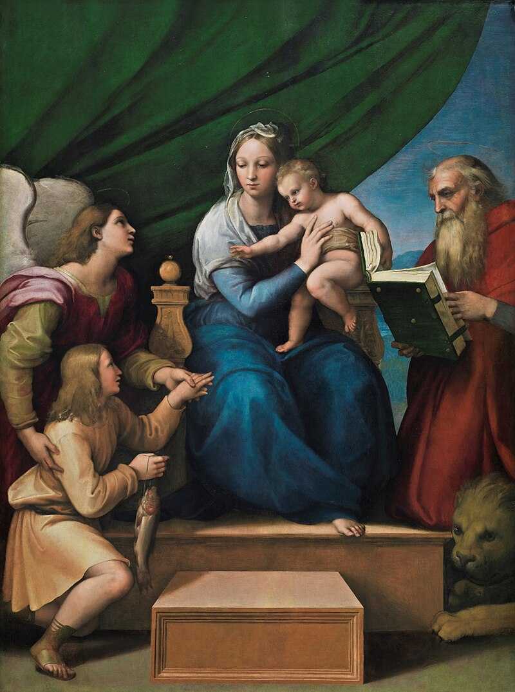
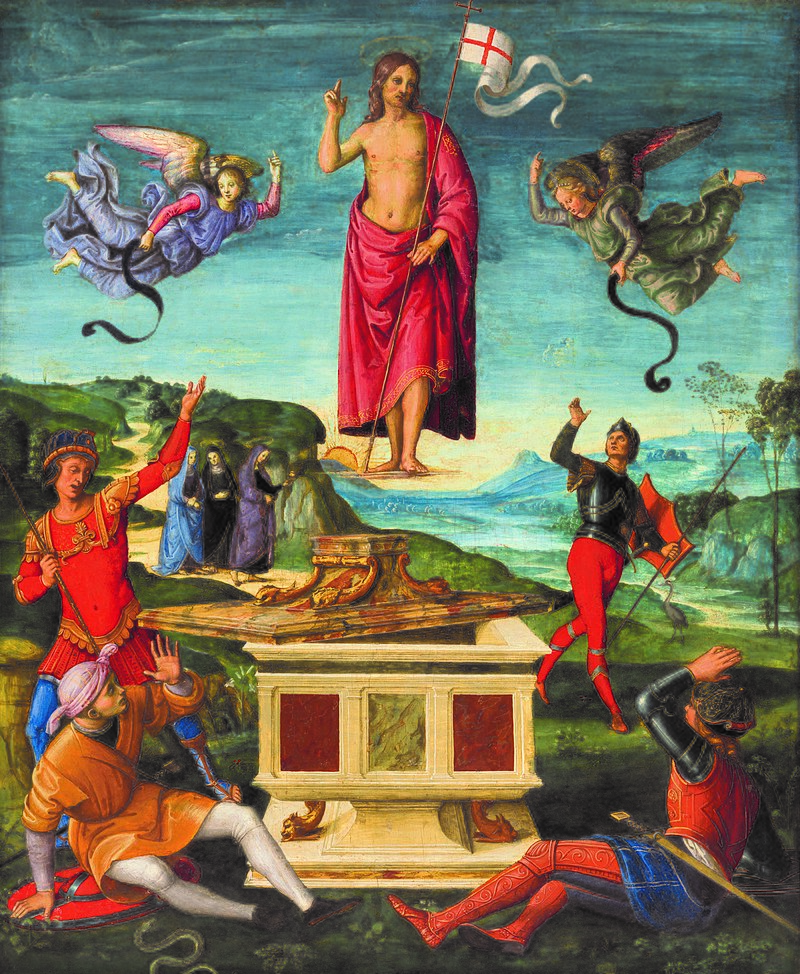
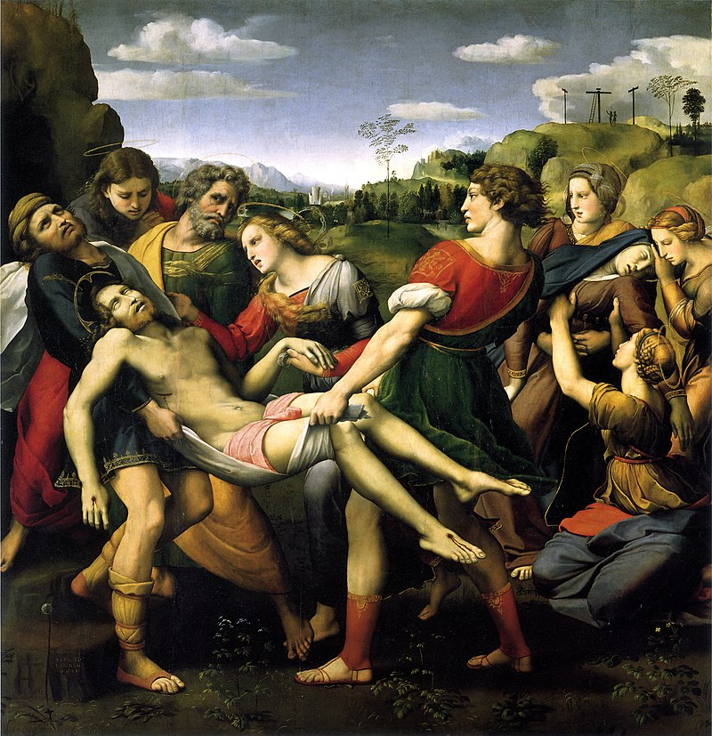
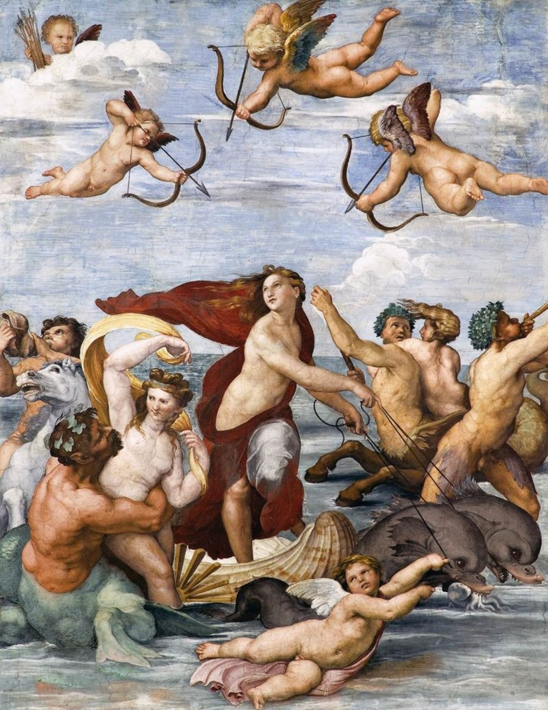
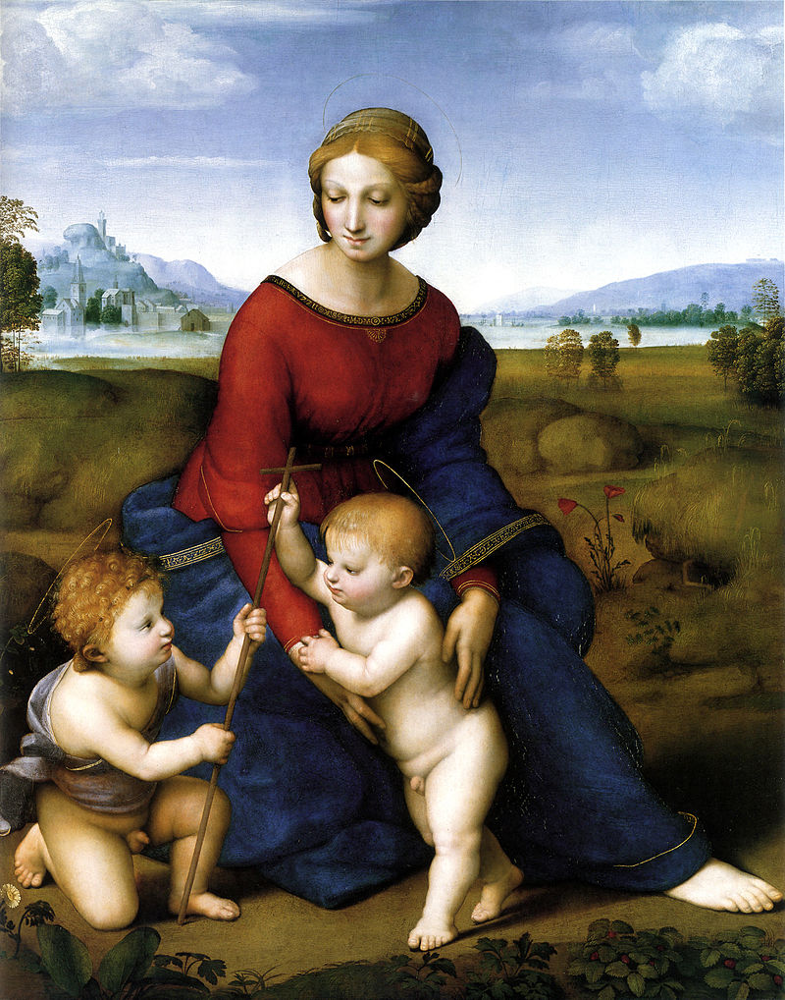
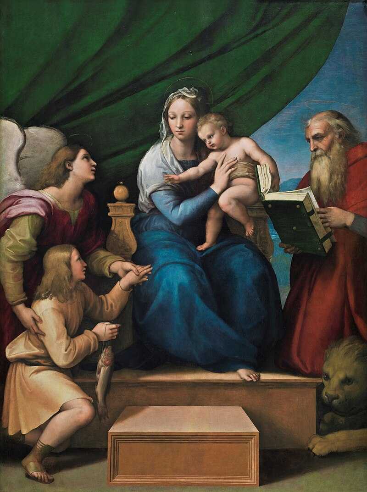
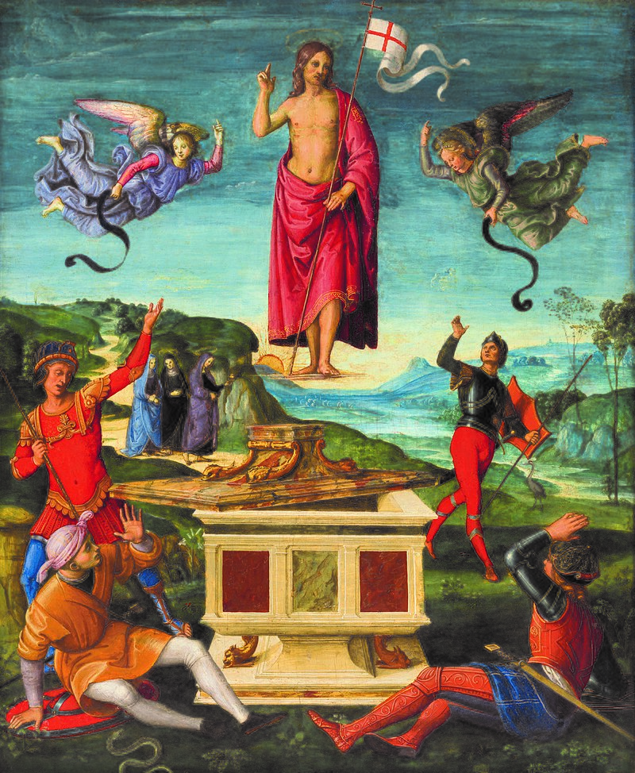
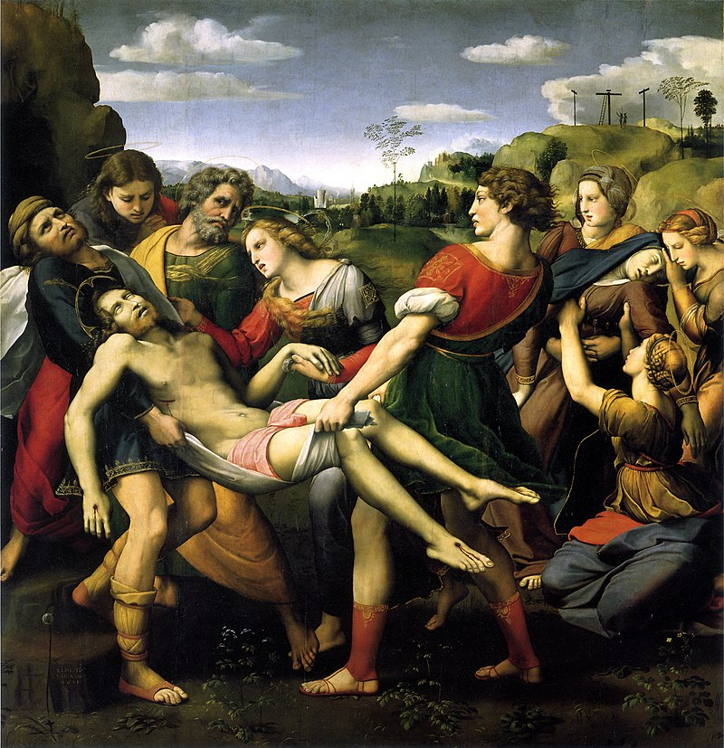
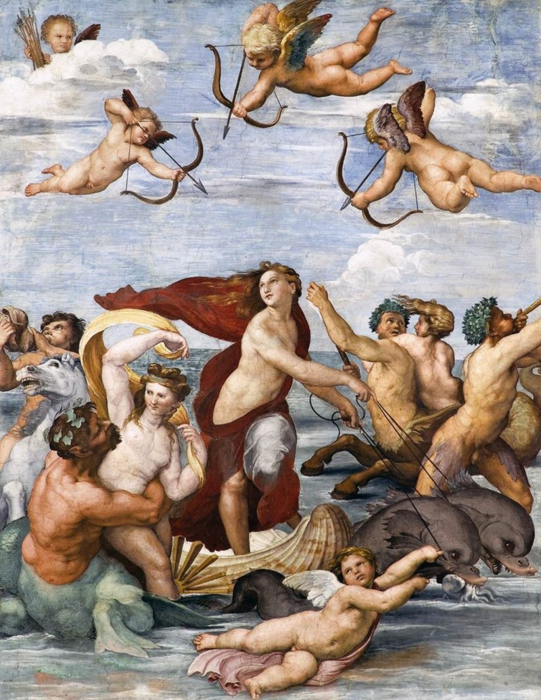
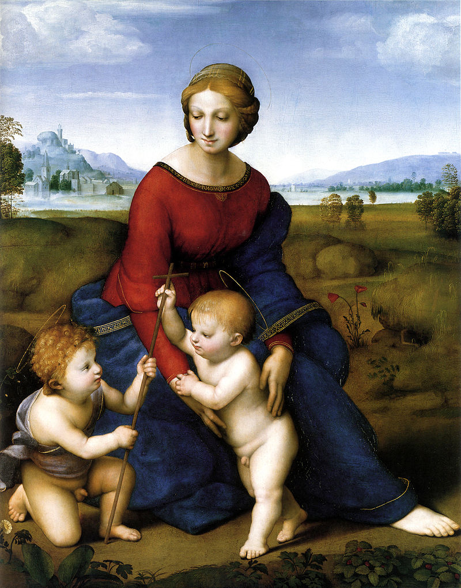

Raffaello
Raffaello Sanzio (Urbino, 28 marzo o 6 aprile 1483 Roma, 6 aprile 1520) è stato un pittore e architetto italiano, fra i più celebri del Rinascimento. Considerato uno dei più grandi artisti di ogni tempo e fra i massimi interpreti del concetto estetico del Bello[1], Raffaello ha vissuto una parabola lavorativa relativamente breve ma estremamente prolifica e profondamente innovativa[2] per le numerose opere iconiche e per il modo in cui queste sono state prodotte, avvalendosi di una bottega altamente strutturata e composta da numerosi professionisti di altissimo livello e varie discipline che il maestro dirigeva e a cui affidava buona parte del suo lavoro. La "maniera" di Raffaello fu di vitale importanza per lo sviluppo del linguaggio artistico dei secoli a venire, sia per emulazione da parte dei suoi collaboratori che ne portarono avanti il linguaggio per decenni in tutta Europa raccolti nella scuola del manierismo, sia per contrasto attraverso il rifiuto dell'opera raffaellesca iniziato da Caravaggio. A tutto questo si aggiunge il pionieristico lavoro di studio e recupero delle vestigia dell'arte romana, impostato su rigorosi criteri scientifici, che lo rendono fra i padri dell'archeologia e della tutela dei beni culturali. La sua influenza sulla storia dell'arte occidentale è straordinariamente estesa. Impostosi come modello fondamentale per tutte le accademie di belle arti fino alla prima metà dell'Ottocento, il mito di Raffaello ha raggiunto le avanguardie del XX secolo e l'arte contemporanea del XXI secolo, fino a lambire altre arti come il cinema e il fumetto.
 








